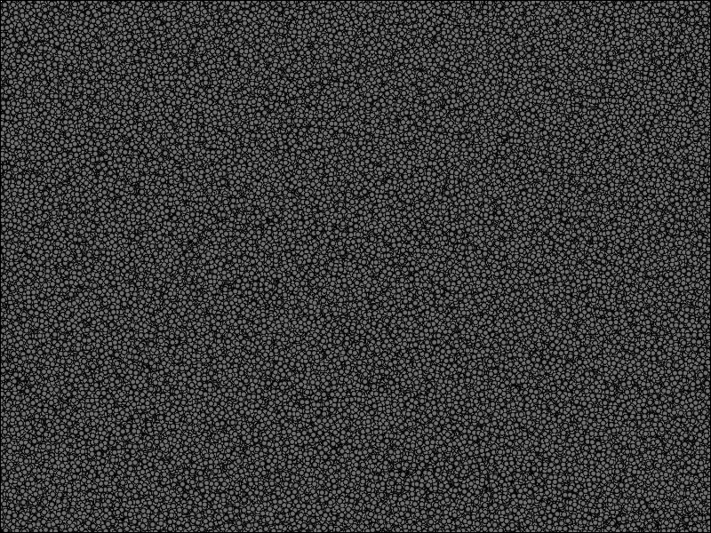

Note
Go to the end to download the full example code.
Vispy Lasso#
Demonstrate the use of lasso selection.
The lasso selection is done on a 2D scatter but could be extended further by user.
import sys
import warnings
import numpy as np
from vispy import app, scene
from vispy.geometry import curves
from vispy.scene import visuals
try:
from matplotlib import path
except ImportError:
warnings.warn("Lasso example requires matplotlib for more accurate selection. Falling back to numpy based selection.")
path = None
LASSO_COLOR = (1, .1, .1)
FILTERED_COLOR = (1, 1, 1, 0.3)
SELECTED_COLOR = (0.3, 0, 1, 1.0)
PEN_RADIUS = 2
MIN_MOVE_UPDATE_THRESHOLD = 5
NUMBER_POINT = 2000000
SCATTER_SIZE = 5
canvas = scene.SceneCanvas(keys='interactive', show=True)
view = canvas.central_widget.add_view()
pointer = scene.visuals.Ellipse(center=(0., 0.), radius=(PEN_RADIUS, PEN_RADIUS,), color=None, border_width=0.2, border_color="white",
num_segments=10, parent=view.scene)
lasso = scene.visuals.Line(pos=np.array([[0, 0], [0, 0]]), color = LASSO_COLOR, parent=view.scene, width = PEN_RADIUS , antialias=True)
px, py = 0, 0
# generate data
pos = 360 * np.random.normal(size=(NUMBER_POINT, 2), scale=1)
# one could stop here for the data generation, the rest is just to make the
# data look more interesting. Copied over from magnify.py
centers = np.random.normal(size=(NUMBER_POINT, 2), scale = 1) * 960
indexes = np.random.normal(size=NUMBER_POINT, loc=centers.shape[0] / 2,
scale=centers.shape[0] / 3)
indexes = np.clip(indexes, 0, centers.shape[0] - 1).astype(int)
pos += centers[indexes]
# create scatter object and fill in the data
scatter = visuals.Markers()
point_color = np.full((NUMBER_POINT, 4), FILTERED_COLOR)
selected_mask = np.full(NUMBER_POINT, False)
scatter.set_data(pos, edge_width=0, face_color=point_color, size=SCATTER_SIZE)
view.add(scatter)
def points_in_polygon(polygon, pts):
"""Get boolean mask of points in a polygon reusing matplotlib implementation.
The fallback code is based from StackOverflow answer by ``Ta946`` in this question:
https://stackoverflow.com/questions/36399381/whats-the-fastest-way-of-checking-if-a-point-is-inside-a-polygon-in-python
This is a proof of concept and depending on your use case, willingness
to add other dependencies, and your performance needs one of the other answers
on the above question would serve you better (ex. shapely, etc).
"""
# Filter vertices out of the polygon's bounding box, this serve as an early optimization whenever number of vertices
# to filter out is huge.
x1, x2, y1, y2 = min(polygon[:, 0]), max(polygon[:, 0]), min(polygon[:, 1]), max(polygon[:, 1])
selection_mask = (x1 < pts[:, 0]) & (pts[:, 0] < x2) & (y1 < pts[:, 1]) & (pts[:, 1] < y2)
pts_in_bbox = pts[selection_mask]
# Select vertices inside the polygon.
if path is not None:
polygon = path.Path(polygon[:, :2], closed = True)
polygon_mask = polygon.contains_points(pts_in_bbox[:, :2])
else:
contour2 = np.vstack((polygon[1:], polygon[:1]))
test_diff = contour2-polygon
m1 = (polygon[:,1] > pts_in_bbox[:,None,1]) != (contour2[:,1] > pts_in_bbox[:,None,1])
slope = ((pts_in_bbox[:,None,0]-polygon[:,0])*test_diff[:,1])-(test_diff[:,0]*(pts_in_bbox[:,None,1]-polygon[:,1]))
m2 = slope == 0
mask2 = (m1 & m2).any(-1)
m3 = (slope < 0) != (contour2[:,1] < polygon[:,1])
m4 = m1 & m3
count = np.count_nonzero(m4, axis=-1)
mask3 = ~(count%2==0)
polygon_mask = mask2 | mask3
# Return the full selection mask based on bounding box & polygon selection.
selection_mask[np.where(selection_mask == True)] &= polygon_mask
return selection_mask
def select(polygon_vertices, points):
# Set default mask to filter everything since user selection
# is not yet calculated.
selected_mask = np.full((NUMBER_POINT, 4), FILTERED_COLOR)
if polygon_vertices is not None:
# Optimization: It's faster to convert lasso selection straight to visual coordinates since there's generally less vertices
# this would speed up the processing depending on the scene.
polygon_vertices = scatter.get_transform('canvas', 'visual').map(polygon_vertices)
selected_mask = points_in_polygon(polygon_vertices, points)
return selected_mask
@canvas.connect
def on_mouse_press(event):
global point_color, selected_mask
if event.button == 1:
# Reset lasso state.
lasso.set_data(pos=np.empty((1, 2)))
# Reset selected vertices to the filtered color, this would earn some time in case
# scene contains a lot of vertices.
point_color[selected_mask] = FILTERED_COLOR
scatter.set_data(pos, edge_width=0, face_color=point_color, size=SCATTER_SIZE)
@canvas.connect
def on_mouse_move(event):
global pointer, px, py
pp = event.pos
# Optimization: to avoid too much recalculation/update we can update scene only if the mouse
# moved a certain amount of pixel.
if (abs(px - pp[0]) > MIN_MOVE_UPDATE_THRESHOLD or abs(py - pp[1]) > MIN_MOVE_UPDATE_THRESHOLD):
pointer.center = pp
if event.button == 1:
polygon_vertices = event.trail()
lasso.set_data(pos = np.insert(polygon_vertices, len(polygon_vertices), polygon_vertices[0], axis=0))
px, py = pp
@canvas.connect
def on_mouse_release(event):
global point_color, selected_mask
if event.button == 1:
selected_mask = select(event.trail(), pos)
# Set selected points with selection color
point_color[selected_mask] = SELECTED_COLOR
scatter.set_data(pos, edge_width=0, face_color=point_color, size=SCATTER_SIZE)
if __name__ == '__main__':
canvas.show()
if sys.flags.interactive == 0:
app.run()
Total running time of the script: (0 minutes 6.500 seconds)